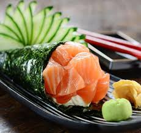

Salmon temaki

How to make a Salmon temaki
The Salmon temaki became very popular in western countries.
A more compact version of the traditional japanese sushi
This guide contains the Instructions on how to make the Salmon temaki
and the ingredients needed.
Ingridients
- Smoked salmon, slices 4 pcs
- Sushi rice, cooked 1 cup
- Rice vinegar 1 tsp
- Nori dried seaweed wraps 2 sheets
- Cucumber, sliced into strips 4 strips
- Avocado, sliced into strips 1 strips
- Mayonnaise As needed
Steps
- Combine the cooked rice with vinegar. Set aside to let cool.
- Slice the cucumber and avocado into thick, pencil-like strips.
- Cut the nori sheets into half and place the shiny side down.
- With damp hands, shape a handful of rice (about ¼ cup) into a cone shape
- Compress rice slightly on one side of the cone with your thumb.
Spread some wasabi and mayonnaise into the indentation and pack it with a slice of
salmon and strips of cucumber and avocado.
-
Place the rice cone diagonally on one side of the nori sheet,
with the sharp edge of the cone pointing to the center of the bottom edge.
- Take the closer corner of the nori and fold over rice cone.
-
Keeping the nori tight,
continue to roll it over the rice cone using the pointed end of the rice
cone as the central point.
- Seal edge with a little water.
Home